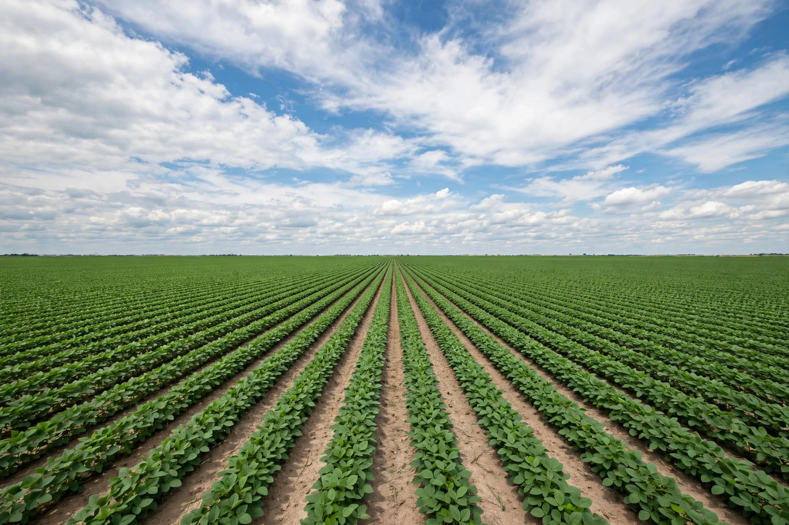

Monoculture

In agriculture, monoculture is the practice of growing a single crop, plant, or livestock species, variety, or breed in a field or farming system at a time. Monoculture is widely used in intensive farming and in organic farming alike: it produces fields that allow specialised planting and harvesting machinery to work efficiently, simplifies management, and maximises the yield of a chosen crop. The contrasting practice of growing multiple crops in proximity is called polyculture, and rotating different crops on the same land across seasons is crop rotation.
Advantages
Monoculture allows farmers to match machinery, seed, fertiliser and pest control precisely to a single crop, capturing economies of scale. It also concentrates expertise and supply chains — a region can specialise in one crop for which its soil and climate are best suited. Plantation systems for oil palm, banana, sugarcane, tea and rubber are classic examples.
Disadvantages and risks
Because a monoculture population is genetically uniform, it lacks the diversity that slows the spread of pests and disease. Whole harvests have been destroyed when a single pathogen met a susceptible uniform crop: the Irish Great Famine of the 1840s followed the failure of the genetically narrow 'Lumper' potato; the Gros Michel banana export industry collapsed from Panama disease; and the 1970 southern corn leaf blight epidemic in the United States destroyed about 15% of the maize crop because most plants shared the same cytoplasm type. Monocultures also deplete specific soil nutrients, encourage build-ups of crop-specific pests, and reduce habitat for pollinators and other wildlife. Forestry practice speaks of monoculture tree plantations, and suburban lawns of a single grass species are sometimes called monocultures.
Genetic diversity
The genetic erosion caused by replacing many local landraces with a few high-yielding varieties has prompted conservation efforts in gene banks and seed vaults, such as the Svalbard Global Seed Vault. Plant breeders reintroduce genes from wild relatives of crops to restore resistance.
Cultural use
The term has been borrowed to describe social and technological uniformity — for example a "global monoculture" of tastes, or a security risk arising when nearly all computers run the same operating system software.
See also
Polyculture · Crop rotation · Intensive farming · Genetic diversity